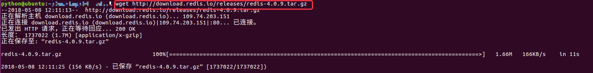
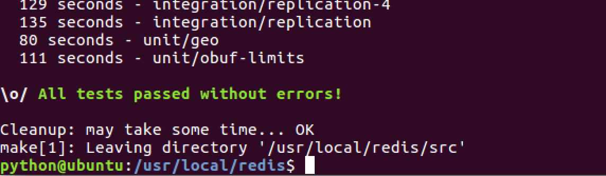
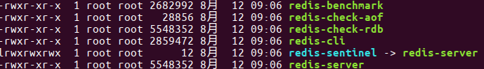

Redis 安装
ubuntu虚拟机中安装Redis的方式如下
step1:下载
下载地址：http://download.redis.io/releases/redis-5.0.5.tar.gz
说明：上述的下载地址是最新版本(2019年6月)，下面的截图是之前的版本的下载、安装过程，道理是一样的请适当修改类比安装即可


step2:解压
tar xzf redis-4.0.9.tar.gz
step3:移动
放到usr/local⽬录下
sudo mv ./redis-4.0.9 /usr/local/redis/
step4:进⼊redis⽬录
cd /usr/local/redis/
step5:生成
sudo make

step6:测试
这段运⾏时间会较⻓
sudo make test

step7:安装
将redis的命令安装到/usr/local/bin/⽬录
sudo make install
step8:安装完成后
我们进入目录/usr/local/bin中查看
cd /usr/local/bin
ls -all

- redis-server redis服务器
- redis-cli redis命令行客户端
- redis-benchmark redis性能测试工具
- redis-check-aof AOF文件修复工具
- redis-check-rdb RDB文件检索工具
step9:配置⽂件
移动到/etc/⽬录下
配置⽂件⽬录为/usr/local/redis/redis.conf
sudo cp /usr/local/redis/redis.conf /etc/redis/
Mac 上安装 Redis:
安装 Homebrew：
使用 brew 安装 Redis
https://www.cnblogs.com/cloudshadow/p/mac_brew_install_redis.html